| Au+Au h-h trig assoc
>2.0 GeV/c from http://arxiv.org/abs/0909.0191 |
Cu+Cu lam-h 3-6 GeV/c assoc > 1.5 GeV/c | Cu+Cu k0-h 3-6 GeV/c assoc > 1.5 GeV/c |
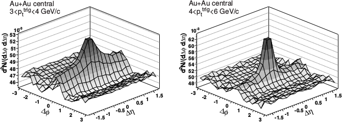 |
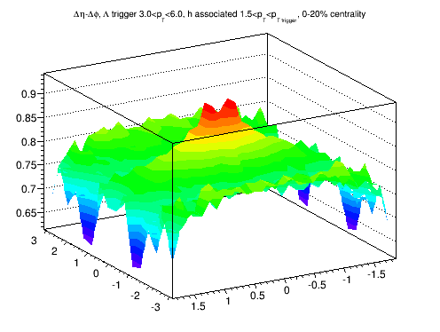 |
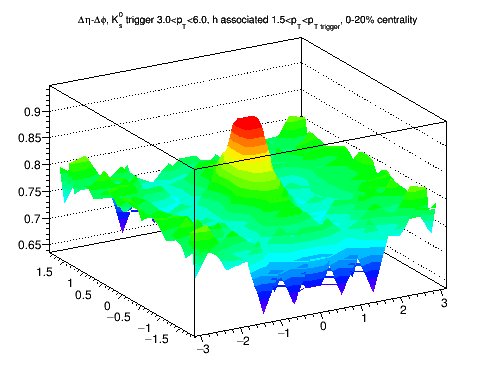 |
| Plot Black: nominal value from const+Gaussian fit Red: fit of a constant from 1.0-1.75 Blue: Fit of a constant from 1.25 to 1.75 |
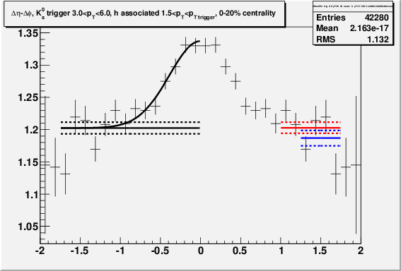 |
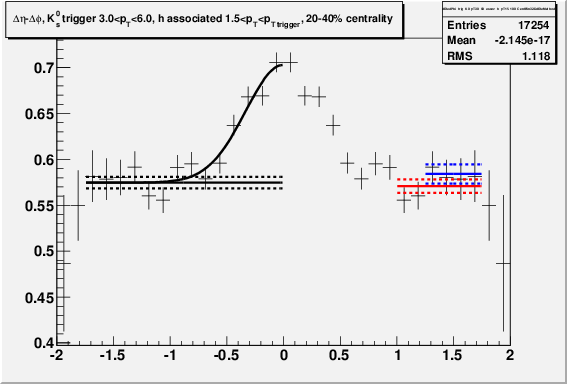 |
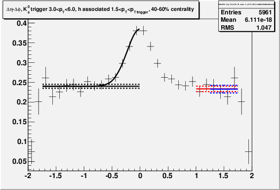 |
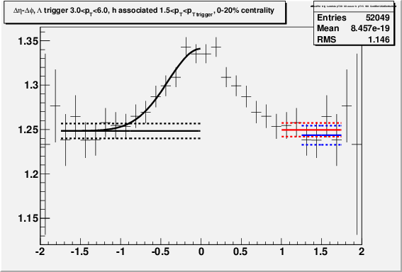 |
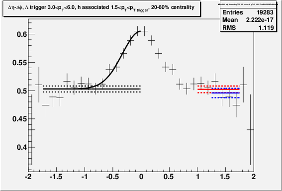 |
| Various backgrounds | nominal background 1.20258 +/- 0.00898582 const1 1.20289 +/- 0.0085476 nsigma -0.0245302 const2 1.18679 +/- 0.0119784 nsigma 1.05462 |
nominal background 0.574684 +/- 0.00630932 const1 0.570793 +/- 0.00731184 nsigma 0.402921 const2 0.584136 +/- 0.0103998 nsigma -0.777038 |
nominal background 0.239896 +/- 0.00497966 const1 0.233482 +/- 0.00688283 nsigma 0.754916 const2 0.232852 +/- 0.00962769 nsigma 0.649802 |
nominal background 1.24831 +/- 0.00834072 const1 1.24963 +/- 0.00773977 nsigma -0.116047 const2 1.24355 +/- 0.0108182 nsigma 0.348317 |
nominal background 0.502871 +/- 0.00528361 const1 0.502275 +/- 0.00595012 nsigma 0.07485 const2 0.495828 +/- 0.0082462 nsigma 0.719131 |
| Impact of background on yield bkgderr is the error on the yield due to the background |
yield bc 0.12863 +/- 0.0116285 yield fit 0.123655 +/- 0.0198528 bkgderr 0.00786259 diff1 -0.000237292 nsigma -0.0301799 diff2 0.0123178 nsigma 1.56664 |
yield bc 0.106806 +/- 0.00934352 yield fit 0.104523 +/- 0.0128461 bkgderr 0.00552066 diff1 0.0030352 nsigma 0.549789 diff2 -0.00737247 nsigma -1.33543 |
yield bc 0.0861466 +/- 0.0086784 yield fit 0.0839059 +/- 0.00901499 bkgderr 0.0043572 diff1 0.00500233 nsigma 1.14806 diff2 0.00549382 nsigma 1.26086 |
yield bc 0.0923388 +/- 0.0106976 yield fit 0.0885821 +/- 0.0185554 bkgderr 0.00729813 diff1 -0.00102995 nsigma -0.141126 diff2 0.0037113 nsigma 0.508528 |
yield bc 0.0832069 +/- 0.00773909 yield fit 0.0828261 +/- 0.0109827 bkgderr 0.00462316 diff1 0.000464578 nsigma 0.100489 diff2 0.0054935 nsigma 1.18825 |
| Cu+Cu data | |||||
| 1.5<ptassoc<pttrig for 3.0<pttrig<6.0 | 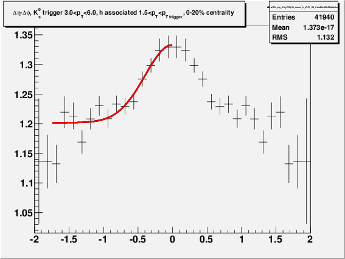 |
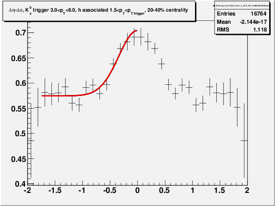 |
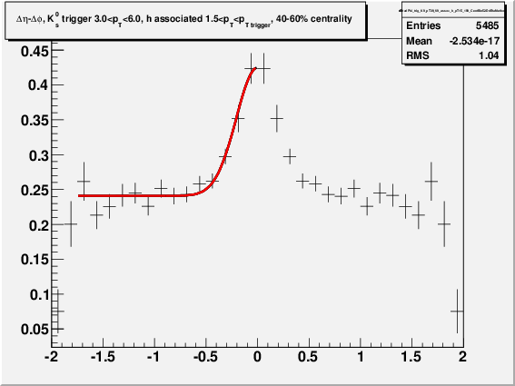 |
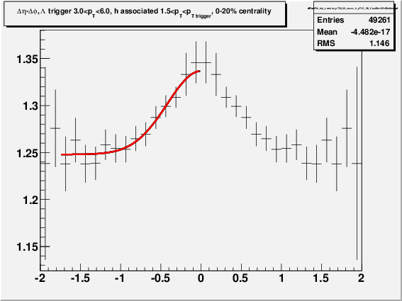 |
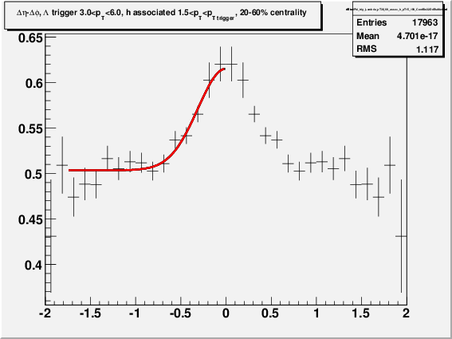 |
| 1.5<ptassoc<3.0 for 3.0<pttrig<6.0 | 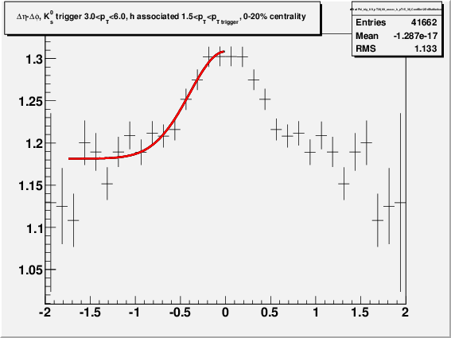 |
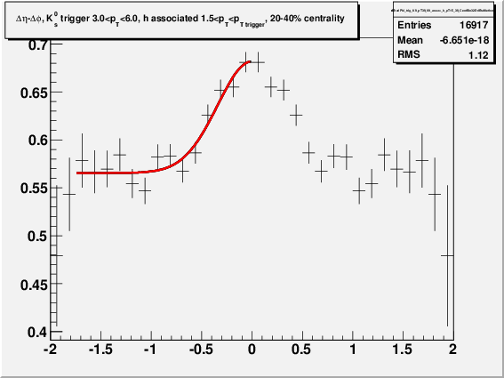 |
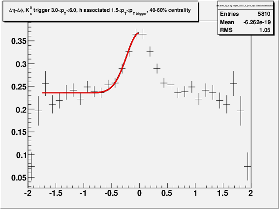 |
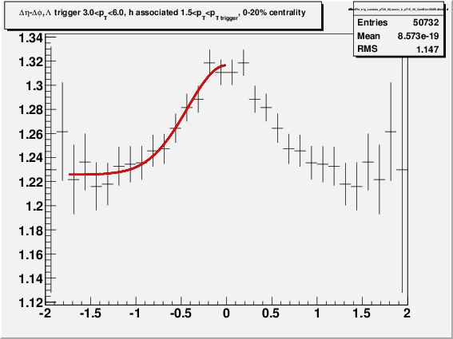 |
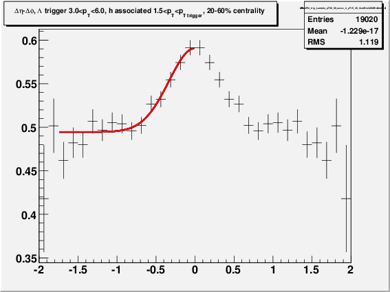 |
| K0 0-20% |
K0 20-40% |
K0 40-60% |
Lambda 0-30% |
Lambda 30-60% |
|
| 1.5<ptassoc<pttrig for 3.0<pttrig<6.0 | 0.128+/-0.012 |
0.107+/-0.009 |
0.086+/-0.009 |
0.092+/- 0.011 |
0.083+/-0.008 |
| 1.5<ptassoc<3.0 for 3.0<pttrig<6.0 | 0.124+/-0.085 |
0.098+/-0.009 |
0.079+/-0.009 |
0.094+/-0.011 |
0.079+/-0.008 |